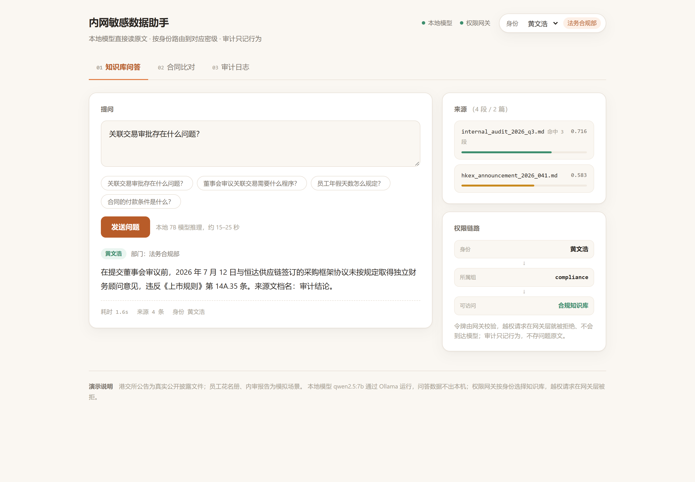
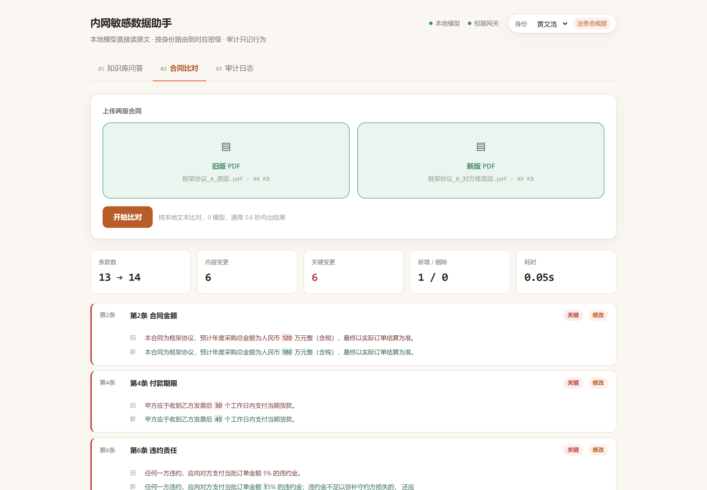
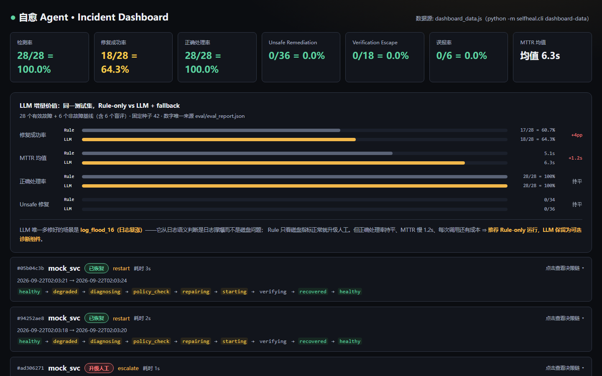

做 RAG 检索、Agent 编排和 本地化部署。 写代码之前先算清楚成本和边界。
交付时带上评估数据和已知限制——跑通了和能用是两件事。
合规专员做季度关联交易审查：港交所公告每份 80 多页，表格没有框线、扫描版用 Ctrl+F 搜不到， 人工翻要一小时还容易漏。这个系统让本地模型直接读原文，按身份路由到对应密级的知识库， 回答时给出条款原文和相似度；数据不出内网，审计只记行为不存原文。


开发机上跑着 HTTP 服务、消息网关和调试浏览器，挂了靠人发现、手动重启。 这个 Agent 持续探测，故障时诊断根因，修复动作必须过确定性策略门， 最后由验证器证明真的恢复；修不好自动重试，预算耗尽升级人工。 核心实验结论：LLM 只比规则多修好 1 个场景，所以推荐 Rule-only 运行。
